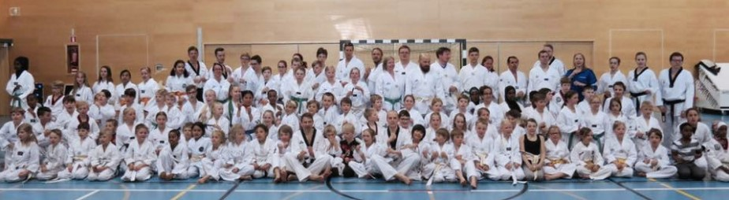
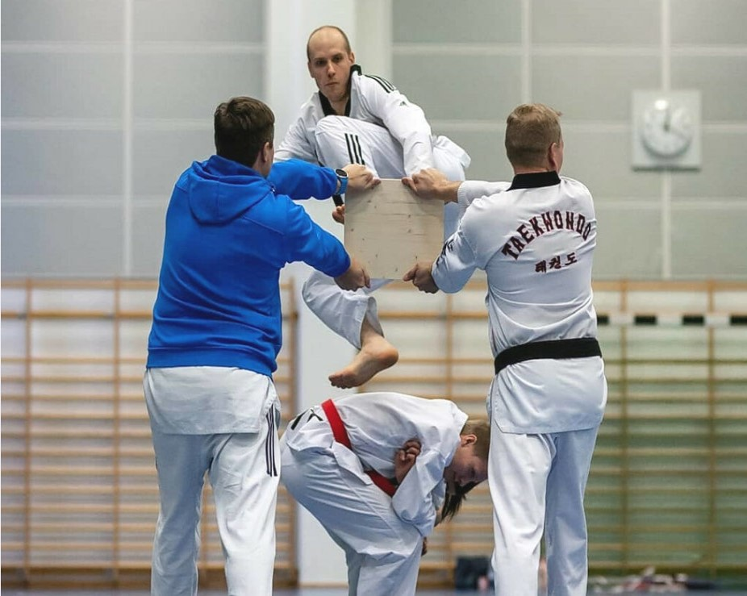

Wondo - Taekwondoa Helsingissä ja Espoossa
Wondo on pääkaupunkiseudun suurin taekwondoyhteisö.
Tarjoamme laadukasta taekwondo-opetusta yli 700 harrastajalle aloittelijoista huippu-urheilijoihin. Harjoittelun laadun Wondossa takaavat kokeneet ohjaajat. Lapsi- ja nuorisotoiminnasta vastaavat korkeasti koulutetut ammattilaiset.
Taekwondo on korealainen potkupainotteinen kamppailulaji. Me opetamme taekwondoa, jotta sinäkin voittaisit itsesi. Taekwondo sopii kaikille. Laji mahdollistaa hauskan tavan kohottaa kuntoa ilman sen suurempia tavoitteita ja kunnianhimoisemmille laji mahdollistaa huippu-urheilijan uran aina Olympialaisiin asti. Tarjoamme hikistä treeniä ja hauskaa yhdessäoloa niin lapsille kuin aikuisille. Tule mukaan – sinussakin elää kamppailijan henki!
Harjoituksia järjestetään eri puolilla Helsinkiä ja Espoota. Tällä hetkellä opetamme taekwondoa Tapiolassa, Espoon keskuksessa, Itäkeskuksessa, Pasilassa, Laajasalossa, Latokartanossa, Lauttasaaressa, Leppävaarassa, Olarissa, ja Pihlajamäessä.
Wondo on saanut toimintaansa opetus- ja kulttuuriministeriön seuratukea.
Tervetuloa mukaan harjoituksiin!
